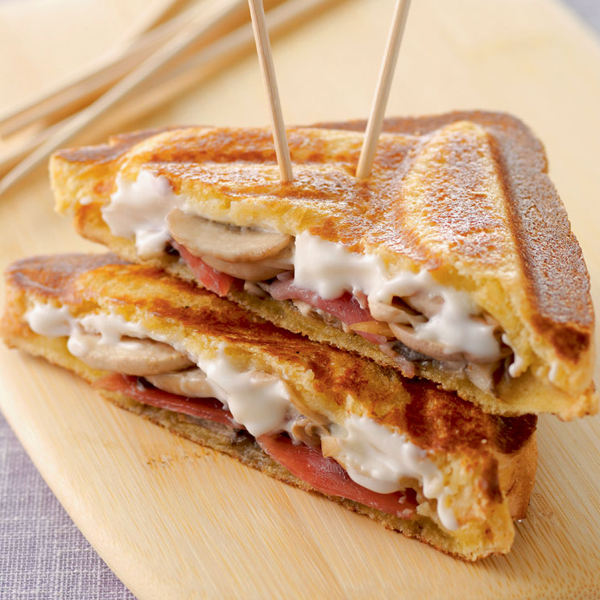

Pan con Jamón Serrano
Receta de pan con jamón serrano. (La presentación es lo que cuenta)

Ingredientes
- 2 rodajas de jamón serrano.
- 2 rodajas de pan (sandwich o bagete)
- queso blanco o mozzarella
- ketchup, mayonesa
- margarina 10gr
Elaboración (Pasos)
- untar a las rodajas de pan la margarina
-
colocar sobre una rodaja de pan el jamón, queso, ketchup, mayonesa
- colocar sobre la preparación la otra rodaja de pan
- calentar en sarten para que se dore el pan